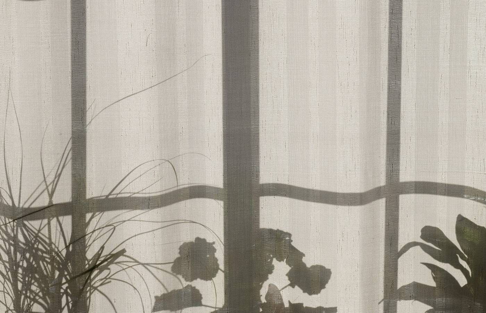

店のこと
クレープメーカーの部位の配置図
お店の詳しい情報は準備中です。ここでは、制作側が考えたデザインの考え方を紹介します。


制作側の連想
番号は、部位の番号
ホームの図にある1〜6の番号は、それぞれクレープメーカーの部位の名前に対応します。クレープメーカーの部位を図にしたもので、制作側の連想です。お店の理念・由来とは無関係で、実際の製品の仕様を示すものでもありません。
1鉄板
生地を広げて焼く、丸くて平らな面。
2縁
鉄板のまわりをぐるりと囲む、わずかに高いふち。生地が外へこぼれにくいようにする部分。
3本体
鉄板を載せる胴の部分。熱を生み出す仕組みは、この中に収まる形が多い。
4温度ダイヤル
回して温度を選ぶ、丸いつまみの部分。
5トンボ
T字の形をした木製のへら。生地を円く薄くのばすための道具。
6生地皿
生地を入れておく浅い丸皿。トンボを置いておく向きに使う形もある。
写真(イメージ)
写真(イメージ)


写真はイメージです。お店のものではありません。